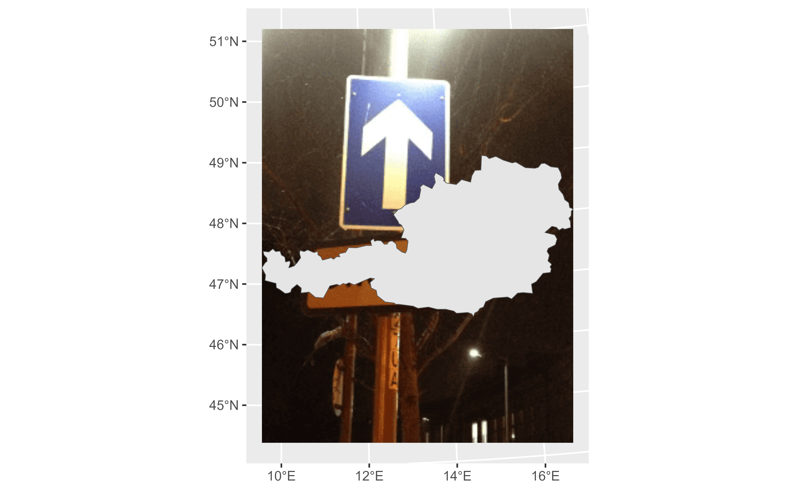
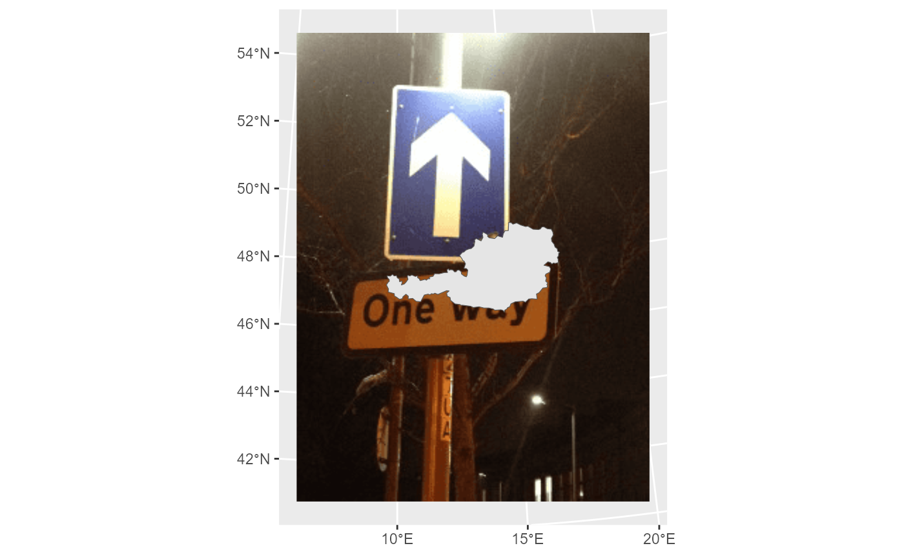
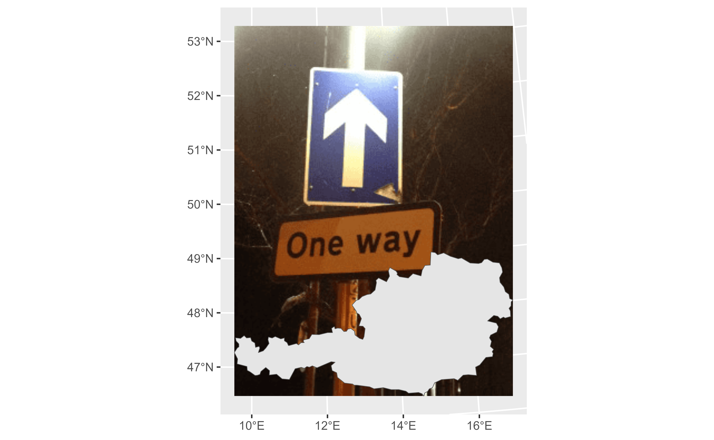
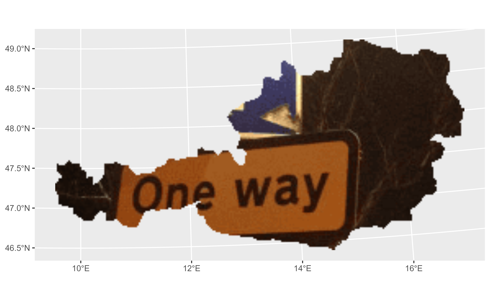
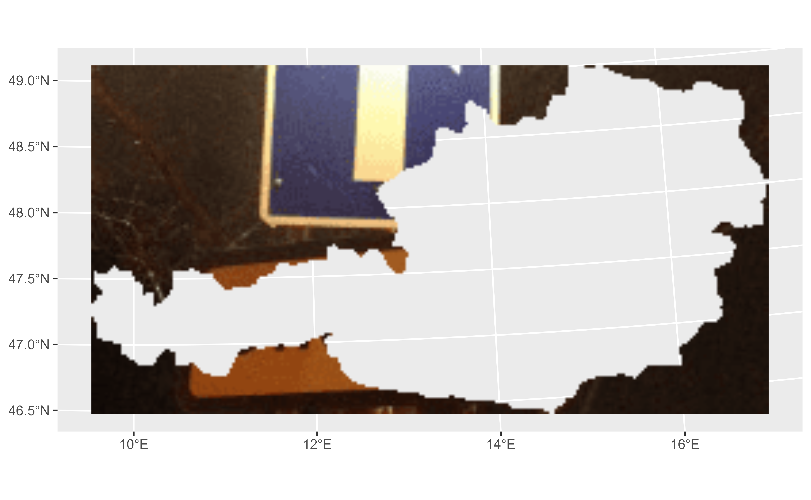

Starting with rasterpic is very easy! You just need a image (png, jpeg/jpg or tif/tiff) and a spatial object (from the sf or the terra) package to start using it.
Basic usage
We use here as an example the shape of Austria:
library(sf)
library(terra)
library(rasterpic)
x <- st_read(system.file("gpkg/austria.gpkg",
package = "rasterpic"
),
quiet = TRUE
)
img <- system.file("img/vertical.png",
package = "rasterpic"
)
# Create!
default <- rasterpic_img(x, img)
plotRGB(default)
plot(st_geometry(x), add = TRUE, col = "grey90")
Options
The function provides several options for expanding, alignment and cropping.
Expand
With this option the image is zoomed out of the spatial object:
expand <- rasterpic_img(x, img, expand = 1)
plotRGB(expand)
plot(st_geometry(x), add = TRUE, col = "grey90")
Alignment
Decide where to align the image:
bottom <- rasterpic_img(x, img, valign = 0)
plotRGB(bottom)
plot(st_geometry(x), add = TRUE, col = "grey90")
Crop and mask
Create impressive maps!:
mask <- rasterpic_img(x, img, crop = TRUE, mask = TRUE)
plotRGB(mask)
maskinverse <- rasterpic_img(x, img,
crop = TRUE,
mask = TRUE,
inverse = TRUE
)
plotRGB(maskinverse)